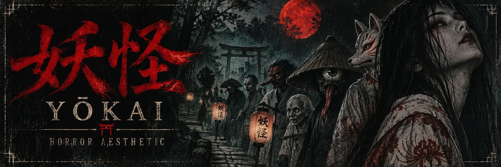
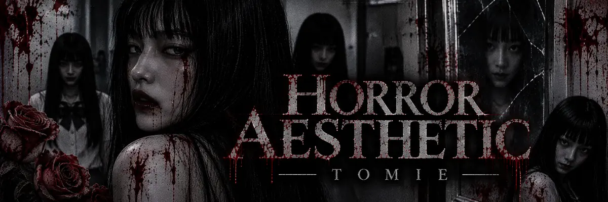
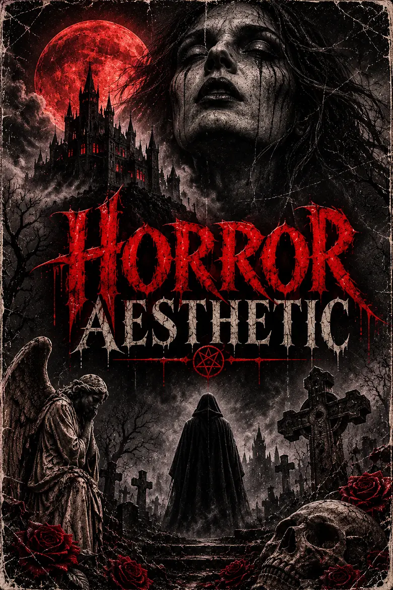
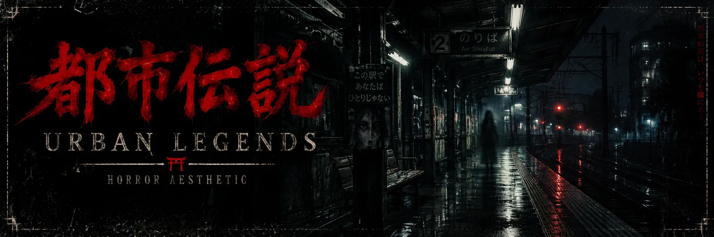

The Horror Library
Книги, рассказы и визуальные исследования тёмной литературы.
Библиотека тёмного воображения: готическая проза, японские истории о призраках, манга, сплаттерпанк и авторы, исследующие границы страха.
Книги, рассказы и визуальные исследования тёмной литературы.

Классические истории о призраках и странных встречах.

Существа японского фольклора и их истории.

Красота, одержимость и бесконечное перерождение.

Замки, тайны, проклятые роды и тёмная романтика.

Городские мифы, исчезновения и современные страшилки.